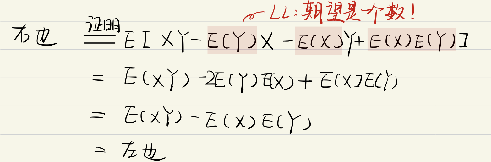
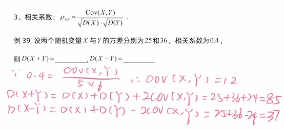

协方差
定义
COV(X,Y)=E[(X−E(X))(Y−E(Y))]
特别的
COV(X,X)=D(X)
计算方法
COV(X,Y)
- =defE[(X−E(X))(Y−E(Y))]
- =E(XY)−E(X)E(Y)证明为什么E(XY)−E(X)E(Y)=E[X−E(X))(Y−E(Y)]？
 - =利用方差21[D(X+Y)−D(X)−D(Y)]证明：D(X+Y)=E((X+Y)2)−(E(X+Y))2=E(X2)+2E(XY)+E(Y2)−(E(X)+E(Y))2=E(X2)−(E(X))2+E(Y2)−(E(Y))2+2E(XY)−2E(X)E(Y)由性质1，2有=D(X)+D(Y)+2⋅[E(X⋅Y)−E(X)E(Y)]=D(X)+D(Y)+2E[(X−E(X))⋅(Y−E(Y))]
- ρXY=D(X)D(Y)COV(X,Y)
性质
- 对称性COV(X,Y)=COV(Y,X)
- 双线性
COV(aX+bY,Z)=aCOV(X,Z)+bCOV(Y,Z)
证明COV(aX+bY,Z)=defE[(aX+bY−E(aX+bY))(Z−E(Z))]=E{[a(X−E(X))+b(Y−E(Y))](Z⋅E(Z)}=分配E[a(X−E(X))(Z−E(Z))+b(Y−E(Y))(Z−E(Z))]=aCOV(X,Z)+bCOV(Y,Z) - Cov(aX,bY)=abCov(X,Y)(a,b为常数)；
- D(X±Y)=D(X)+D(Y)±2Cov(X,Y)
例题
 - 若 X 与 Y 相互独立，则Cov(X,Y)=0.